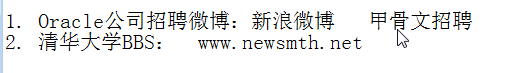

桌面画笔
一.sql语言类型
二、DML（Data Manipulation Language）
1.&是预编译，基本上可以放入到任何sql语句中


2.数据完整性：就是定义在表上的约束。
set feedback off：设置当插入的时候不回显
3.delete和truncate


在Oracle中delete比truncate删除表数据效率高
在mysql中truncate比delete删除表数据效率高
4.事务

四个特性：
1、原子性：原子性是指事务是一个不可分割的工作单位，事务中的操作要么都发生，要么都不发生。?
2、一致性：事务必须使数据库从一个一致性状态变换到另外一个一致性状态。比如转账：转账前aaa+bbb=2000；转账后aaa+bbb=2000；
3、隔离性：事务的隔离性是多个用户并发访问数据库时，数据库为每一个用户开启的事务，不能被其他事务的操作数据所干扰，多个并发事务之间要相互隔离。
4、持久性：指一个事务一旦被提交，它对数据库中数据的改变就是永久性的。
Oracle中有三个事务隔离级别：read only,read commited,serializable.

5.create

rowid指向了该行在数据文件中的位置。

Oracle中的drop table *** 是将表删除到了回收站
show recyclebin;


约束：


三.常见数据库对象

授权：

create view toscott
1.序列


2.同义词
为了安全，可以使真实的表对用户透明。

3.索引


4.视图
视图是一种续表，可以理解为存储起来的select语句。


可以用create or replace 来修改或者创建视图，当存在的时候修改，不存在的时候创建。

5.table
创建


修改table